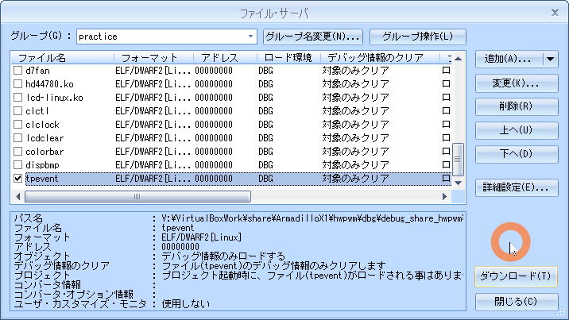
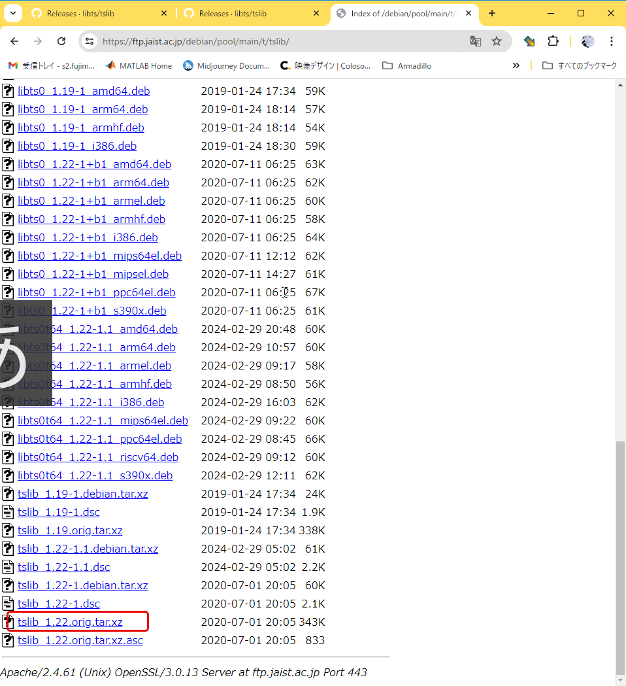
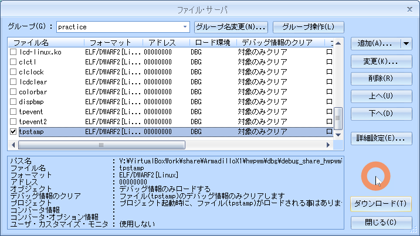

09.touchpanel
目的
組込みアプリケーション開発 09.touchpanel
構成データ
/media/sf_ArmadilloX1/hwpwm/work/R06_2024/Apllication_debug/text/practice ディレクトリ
･･･/share/ArmadilloX1/hwpwm/work/R06_2024/Application_debug/text/practice/ の構成
user@1204PC-Z490M:/mnt/v/VirtualBoxWork/share/ArmadilloX1/hwpwm/work/R06_2024/Application_debug/text/practice$ tree -aF -L 3
./
├── 09.touchpanel/
│ ├── Makefile* <───── デバイス制御用Makefile
│ ├── stamp.bmp* <───── 課題2用ビットマップファイル
│ ├── tpevent2.c* <───── 課題1 デバイス制御用ソース
│ ├── tpevent.c* <───── 例題 デバイス制御用ソース
│ └── tpstamp.c* <───── 課題1 デバイス制御用ソース
タッチパネル制御
デバイス仕様
- タッチもしくはリリース
- タッチ位置の座標

デバイスファイル
"/dev/input/event1"
ボタンスイッチ、センサなど複数の入力デバイスがある場合、ソースファイル内ではデバイスファイル/dev/input/event1 を決め打ちしているので注意すること
イベント
読み出したイベントデータは次のinput_event構造体の形で表示
input_event構造体
#include <linux/input.h>
struct input_event {
struct timeval time;
__u16 type;
__u16 code;
__s32 value;
};
| Type | code | value |
|---|---|---|
| 0(EV_SYN) | 0 | 0 |
| 1(EV_KEY) | 330(BTN_TOUCH) | 1(touch) |
| 0(release) | ||
| 3(EV_ABS) | 0(ABS_X) | X:0-10000 |
| 53(ABS_MT_POSITION_X) | ||
| 1(ABS_Y) | Y:0-10000 | |
| 54(ABS_MT_POSITION_Y) | ||
| 57(ABS_MT_TRACKING_ID) | 0-65535 | |
| -1 | ||
| 47(ABS_MT_SLOT) | 0-9 |
- EV_KEYは、タッチまたはリリースイベント
- イベントの種類はvalueで判別
- EV_ABSは、座標更新イベント
- ABS_X, ABS_MT_POSITION_Xは、X座標
- ABS_Y, ABS_MT_POSITION_Yは、Y座標
- ABS_MT_TRACKING_ID, ABS_MT_SLOTは、マルチタッチ（実習では使用しない）
- EV_SYN（同期）は、一連のイベントの終わり
例題 tpevent
タッチパネルイベントを表示する
| イベント | 表示する文字列 | 備考 |
|---|---|---|
| タッチパネル押す | ”EV_KEY: down” | |
| タッチパネル離す | ”EV_KEY: up” | |
| X座標更新 | ”EV_ABS: x = xxx” | xxx は座標 |
| ”ABS_MT_POSITION: x = xxx” | ||
| Y座標更新 | ”EV_ABS: y = yyy” | yyy は座標 |
| ”ABS_MT_POSITION_Y: y = yyy” | ||
| 同期イベント | “EV_SYN: -------------“ | |
※イベントコードABS_MT_TRACKING_ID, ABS_MT_SLOTが発生した場合は無視
表示例
root@armadillo:/practice/09.touchpanel# ./tpevent
root@armadillo:/practice/09.touchpanel# ./tpevent
ABS_MT_POSITION: x = 1159
ABS_MT_POSITION: y = 1826
EV_KEY: down
EV_ABS: x = 1159
EV_ABS: y = 1826
EV_SYN: -----------------
EV_KEY: up
EV_SYN: ----------------
ソース
tpevent.c
09.touchpanel/tpevent.c
#include <stdio.h>
#include <fcntl.h>
#include <linux/input.h>
#include <unistd.h>
// イベントデバイスファイル。
#define DEVFILE "/dev/input/event1"
int main(void)
{
int fd;
int ret;
struct input_event ev;
// イベントデバイスファイルをオープンします。
fd = open(DEVFILE, O_RDONLY);
// ファイルがオープンできなかった場合、エラー終了します。
if (fd < 0){
perror("failed to open device");
return 1;
}
// イベント内容を表示する処理。
for(;;){
// 入力イベント構造体を読み込みます。
ret = read(fd, &ev, sizeof(ev));
// 読み込みに失敗した場合、エラー終了します。
if (ret < 0){
perror("failed to read events");
return 1;
}
// イベントのタイプで表示内容を変化させます。
switch (ev.type){
// タイプがEV_KEYの時の処理。
case EV_KEY:
// コードがBTN_TOUCHなら状態を表示します。それ以外の場合、エラー終了します。
if (ev.code != BTN_TOUCH){
fprintf(stderr, "unknown event code %d\n", ev.code);
return 2;
}
printf("EV_KEY: %s\n", ev.value ? "down" : "up");
break;
// タイプがEV_ABSの時の処理。
case EV_ABS:
switch (ev.code){
// コードがABS_Xならxの値を表示します。
case ABS_X:
printf("EV_ABS: x = %d\n", ev.value);
break;
// コードがABS_MT_POSITION_Xならxの値を表示します。
case ABS_MT_POSITION_X:
printf("ABS_MT_POSITION: x = %d\n", ev.value);
break;
// コードがABS_Yならyの値を表示します。
case ABS_Y:
printf("EV_ABS: y = %d\n", ev.value);
break;
// コードがABS_MT_POSITION_Yならyの値を表示します。
case ABS_MT_POSITION_Y:
printf("ABS_MT_POSITION: y = %d\n", ev.value);
break;
// コードがABS_MT_TRACKING_IDなら無視します。
case ABS_MT_TRACKING_ID:
break;
// コードがABS_MT_SLOTなら無視します。
case ABS_MT_SLOT:
break;
// コードが上記以外の場合、エラー終了します。
default:
fprintf(stderr, "unknown event code %d\n", ev.code);
return 2;
}
break;
// タイプがEV_SYNの時の処理。
case EV_SYN:
printf("EV_SYN: -----------------\n");
break;
// タイプが上記以外なら、エラー終了します。
default:
fprintf(stderr, "unknown event\n");
return 3;
}
}
// イベントデバイスファイルをクローズします。
close(fd);
return 0;
}
Makefile
09.touchpanel/Makefile
CC = arm-linux-gnueabihf-gcc
#TARGET = tpevent tpevent2 tpstamp
TARGET = tpevent
CFLAGS = -I/work/linux/nfsroot/usr/local/include -gdwarf-2 -O0
LDFLAGS = -L/work/linux/nfsroot/usr/local/lib
LIBS = -lts
all: $(TARGET)
tpevent: tpevent.c
$(CC) -o $@ $^ $(CFLAGS) $(LDFLAGS) $(LIBS)
tpevent2: tpevent2.c
$(CC) -o $@ $^ $(CFLAGS) $(LDFLAGS) $(LIBS)
tpstamp: tpstamp.c
$(CC) -o $@ $^ $(CFLAGS) $(LDFLAGS) $(LIBS)
install :
cp -p $(TARGET) /work/linux/nfsroot/debug/04_practice
cp -p $(TARGET) /media/sf_ArmadilloX1/hwpwm/dbg/debug_share_hwpwm/R06_2024/04_practice
cp -p $(TARGET).c /media/sf_ArmadilloX1/hwpwm/dbg/debug_share_hwpwm/R06_2024/04_practice
cp -p ./*.bmp /work/linux/nfsroot/debug/04_practice
cp -p ./*.bmp /media/sf_ArmadilloX1/hwpwm/dbg/debug_share_hwpwm/R06_2024/04_practice
clean:
rm -f $(TARGET)
.PHONY: clean
動作確認
make clean
$ make clean
atmark@atde8:/media/sf_ArmadilloX1/hwpwm/work/R06_2024/Application_debug/text/practice-example/09.touchpanel$ make clean
rm -f tpevent
make
$ make
atmark@atde8:/media/sf_ArmadilloX1/hwpwm/work/R06_2024/Application_debug/text/practice-example/09.touchpanel$ make
arm-linux-gnueabihf-gcc -o tpevent tpevent.c -I/work/linux/nfsroot/usr/local/include -gdwarf-2 -O0 -L/work/linux/nfsroot/usr/local/lib -lts
sudo make install
$ sudo make install
atmark@atde8:/media/sf_ArmadilloX1/hwpwm/work/R06_2024/Application_debug/text/practice-example/09.touchpanel$ sudo make install
[sudo] atmark のパスワード:
cp -p tpevent /work/linux/nfsroot/debug/04_practice
cp -p tpevent /media/sf_ArmadilloX1/hwpwm/dbg/debug_share_hwpwm/R06_2024/04_practice
cp -p tpevent.c /media/sf_ArmadilloX1/hwpwm/dbg/debug_share_hwpwm/R06_2024/04_practice
cp -p ./*.bmp /work/linux/nfsroot/debug/04_practice
cp -p ./*.bmp /media/sf_ArmadilloX1/hwpwm/dbg/debug_share_hwpwm/R06_2024/04_practice
CSIDEでロード
メニュー「ファイル」-「ロード」

実行結果
root@armadillo:/debug/04_practice# ./tpevent
root@armadillo:/debug/04_practice# ./tpevent
ABS_MT_POSITION: x = 0
ABS_MT_POSITION: y = 0
EV_KEY: down
EV_ABS: x = 0
EV_ABS: y = 0
EV_SYN: -----------------
EV_KEY: up
EV_SYN: -----------------
ABS_MT_POSITION: x = 9963
ABS_MT_POSITION: y = 36
EV_KEY: down
EV_ABS: x = 9963
EV_ABS: y = 36
EV_SYN: -----------------
EV_KEY: up
EV_SYN: -----------------
ABS_MT_POSITION: x = 36
ABS_MT_POSITION: y = 9963
EV_KEY: down
EV_ABS: x = 36
EV_ABS: y = 9963
EV_SYN: -----------------
EV_KEY: up
EV_SYN: -----------------
ABS_MT_POSITION: x = 10000
ABS_MT_POSITION: y = 10000
EV_KEY: down
EV_ABS: x = 10000
EV_ABS: y = 10000
EV_SYN: -----------------
EV_KEY: up
EV_SYN: -----------------
ABS_MT_POSITION: x = 5369
ABS_MT_POSITION: y = 4224
EV_KEY: down
EV_ABS: x = 5369
EV_ABS: y = 4224
EV_SYN: -----------------
EV_KEY: up
EV_SYN: -----------------
ABS_MT_POSITION: x = 5548
ABS_MT_POSITION: y = 36
EV_KEY: down
EV_ABS: x = 5548
EV_ABS: y = 36
EV_SYN: -----------------
EV_KEY: up
EV_SYN: -----------------
ABS_MT_POSITION: x = 19
ABS_MT_POSITION: y = 5079
EV_KEY: down
EV_ABS: x = 19
EV_ABS: y = 5079
EV_SYN: -----------------
EV_KEY: up
EV_SYN: -----------------
ABS_MT_POSITION: x = 9975
ABS_MT_POSITION: y = 4842
EV_KEY: down
EV_ABS: x = 9975
EV_ABS: y = 4842
EV_SYN: -----------------
EV_KEY: up
EV_SYN: -----------------
ABS_MT_POSITION: x = 4957
ABS_MT_POSITION: y = 9460
EV_KEY: down
EV_ABS: x = 4957
EV_ABS: y = 9460
EV_SYN: -----------------
EV_KEY: up
EV_SYN: -----------------
ABS_MT_POSITION: x = 0
ABS_MT_POSITION: y = 0
EV_KEY: down
EV_ABS: x = 0
EV_ABS: y = 0
EV_SYN: -----------------
EV_KEY: up
EV_SYN: -----------------
ABS_MT_POSITION: x = 9963
ABS_MT_POSITION: y = 36
EV_KEY: down
EV_ABS: x = 9963
EV_ABS: y = 36
EV_SYN: -----------------
EV_KEY: up
EV_SYN: -----------------
EV_KEY: down
EV_SYN: -----------------
EV_KEY: up
EV_SYN: -----------------
EV_KEY: down
EV_SYN: -----------------
EV_KEY: up
EV_SYN: -----------------
EV_KEY: down
EV_SYN: -----------------
EV_KEY: up
EV_SYN: -----------------
EV_KEY: down
EV_SYN: -----------------
EV_KEY: up
EV_SYN: -----------------
EV_KEY: down
EV_SYN: -----------------
EV_KEY: up
EV_SYN: -----------------
ABS_MT_POSITION: x = 9431
ABS_MT_POSITION: y = 539
EV_KEY: down
EV_ABS: x = 9431
EV_ABS: y = 539
EV_SYN: -----------------
EV_KEY: up
EV_SYN: -----------------
ABS_MT_POSITION: x = 9963
ABS_MT_POSITION: y = 36
EV_KEY: down
EV_ABS: x = 9963
EV_ABS: y = 36
EV_SYN: -----------------
EV_KEY: up
EV_SYN: -----------------
EV_KEY: down
EV_SYN: -----------------
EV_KEY: up
EV_SYN: -----------------
EV_KEY: down
EV_SYN: -----------------
EV_KEY: up
EV_SYN: -----------------
ABS_MT_POSITION: x = 36
ABS_MT_POSITION: y = 9963
EV_KEY: down
EV_ABS: x = 36
EV_ABS: y = 9963
EV_SYN: -----------------
EV_KEY: up
EV_SYN: -----------------
EV_KEY: down
EV_SYN: -----------------
EV_KEY: up
EV_SYN: -----------------
EV_KEY: down
EV_SYN: -----------------
EV_KEY: up
EV_SYN: -----------------
EV_KEY: down
EV_SYN: -----------------
EV_KEY: up
EV_SYN: -----------------
EV_KEY: down
EV_SYN: -----------------
EV_KEY: up
EV_SYN: -----------------
ABS_MT_POSITION: x = 10000
ABS_MT_POSITION: y = 10000
EV_KEY: down
EV_ABS: x = 10000
EV_ABS: y = 10000
EV_SYN: -----------------
EV_KEY: up
EV_SYN: -----------------
EV_KEY: down
EV_SYN: -----------------
EV_KEY: up
EV_SYN: -----------------
ABS_MT_POSITION: y = 9992
EV_KEY: down
EV_ABS: y = 9992
EV_SYN: -----------------
EV_KEY: up
EV_SYN: -----------------
^C
root@armadillo:/debug/04_practice#
実行している様子
tpevent を実行している動画
tslib
タッチパネル座標からスクリーン座標へ変換するライブラリ
tslib を利用した場合、タッチパネルの座標は左上を原点として800x480(0,0)-(799,479)
tslib を利用するにはあらかじめ キャリブレーション が必要
tslib_1.22.orig.tar.xz による tslib のインストール
VirtualBoxでスクリーンショットを撮ること
ArmadilloX1側で操作すること
apt update
root@armadillo:~# apt update
root@armadillo:~# apt update
Get:1 http://security.debian.org buster/updates InRelease [34.8 kB]
Hit:2 http://archive.debian.org/debian buster InRelease
Ign:3 http://download.atmark-techno.com/debian buster InRelease
Hit:4 http://download.atmark-techno.com/debian buster Release
Fetched 34.8 kB in 7s (4810 B/s)
nf_conntrack: default automatic helper assignment has been turned off for security reasons and CT-based firewall rule not found. Use the iptables CT target to attach helpers instead.
Reading package lists... Done
Building dependency tree
Reading state information... Done
All packages are up to date.
apt install libts-bin libts-dev libts0
root@armadillo:~# apt install libts-bin libts-dev libts0
root@armadillo:~# apt update
Get:1 http://security.debian.org buster/updates InRelease [34.8 kB]
Hit:2 http://archive.debian.org/debian buster InRelease
Ign:3 http://download.atmark-techno.com/debian buster InRelease
Hit:4 http://download.atmark-techno.com/debian buster Release
Fetched 34.8 kB in 7s (4810 B/s)
nf_conntrack: default automatic helper assignment has been turned off for security reasons and CT-based firewall rule not found. Use the iptables CT target to attach helpers instead.
Reading package lists... Done
Building dependency tree
Reading state information... Done
All packages are up to date.
root@armadillo:~#
root@armadillo:~#
root@armadillo:~# apt install libts-bin libts-dev libts0
Reading package lists... Done
Building dependency tree
Reading state information... Done
The following packages were automatically installed and are no longer required:
libevent-core-2.1-6 libevent-pthreads-2.1-6 libopts25 sntp
Use 'apt autoremove' to remove them.
The following NEW packages will be installed:
libts-bin libts-dev libts0
0 upgraded, 3 newly installed, 0 to remove and 0 not upgraded.
Need to get 99.8 kB of archives.
After this operation, 369 kB of additional disk space will be used.
Get:1 http://archive.debian.org/debian buster/main armhf libts0 armhf 1.19-1 [55.0 kB]
Get:2 http://archive.debian.org/debian buster/main armhf libts-bin armhf 1.19-1 [37.6 kB]
Get:3 http://archive.debian.org/debian buster/main armhf libts-dev armhf 1.19-1 [7256 B]
Fetched 99.8 kB in 0s (434 kB/s)
debconf: delaying package configuration, since apt-utils is not installed
Selecting previously unselected package libts0:armhf.
(Reading database ... 44723 files and directories currently installed.)
Preparing to unpack .../libts0_1.19-1_armhf.deb ...
Unpacking libts0:armhf (1.19-1) ...
Selecting previously unselected package libts-bin.
Preparing to unpack .../libts-bin_1.19-1_armhf.deb ...
Unpacking libts-bin (1.19-1) ...
Selecting previously unselected package libts-dev:armhf.
Preparing to unpack .../libts-dev_1.19-1_armhf.deb ...
Unpacking libts-dev:armhf (1.19-1) ...
Setting up libts0:armhf (1.19-1) ...
Setting up libts-bin (1.19-1) ...
Setting up libts-dev:armhf (1.19-1) ...
Processing triggers for libc-bin (2.28-10+deb10u4) ...
Processing triggers for man-db (2.8.5-2+deb10u1) ...
Processing triggers for mime-support (3.62) ...
apt install autoconf automake libtool
root@armadillo:~# apt install libts-bin libts-dev libts0
root@armadillo:~# apt install libts-bin libts-dev libts0
Reading package lists... Done
Building dependency tree
Reading state information... Done
The following packages were automatically installed and are no longer required:
libevent-core-2.1-6 libevent-pthreads-2.1-6 libopts25 sntp
Use 'apt autoremove' to remove them.
The following NEW packages will be installed:
libts-bin libts-dev libts0
0 upgraded, 3 newly installed, 0 to remove and 0 not upgraded.
Need to get 99.8 kB of archives.
After this operation, 369 kB of additional disk space will be used.
Get:1 http://archive.debian.org/debian buster/main armhf libts0 armhf 1.19-1 [55.0 kB]
Get:2 http://archive.debian.org/debian buster/main armhf libts-bin armhf 1.19-1 [37.6 kB]
Get:3 http://archive.debian.org/debian buster/main armhf libts-dev armhf 1.19-1 [7256 B]
Fetched 99.8 kB in 5s (20.3 kB/s)
debconf: delaying package configuration, since apt-utils is not installed
Selecting previously unselected package libts0:armhf.
(Reading database ... 44723 files and directories currently installed.)
Preparing to unpack .../libts0_1.19-1_armhf.deb ...
Unpacking libts0:armhf (1.19-1) ...
Selecting previously unselected package libts-bin.
Preparing to unpack .../libts-bin_1.19-1_armhf.deb ...
Unpacking libts-bin (1.19-1) ...
Selecting previously unselected package libts-dev:armhf.
Preparing to unpack .../libts-dev_1.19-1_armhf.deb ...
Unpacking libts-dev:armhf (1.19-1) ...
Setting up libts0:armhf (1.19-1) ...
Setting up libts-bin (1.19-1) ...
Setting up libts-dev:armhf (1.19-1) ...
Processing triggers for libc-bin (2.28-10+deb10u4) ...
Processing triggers for man-db (2.8.5-2+deb10u1) ...
Processing triggers for mime-support (3.62) ...
root@armadillo:~#
root@armadillo:~#
root@armadillo:~# apt install autoconf automake libtool
Reading package lists... Done
Building dependency tree
Reading state information... Done
The following packages were automatically installed and are no longer required:
libevent-core-2.1-6 libevent-pthreads-2.1-6 libopts25 sntp
Use 'apt autoremove' to remove them.
The following additional packages will be installed:
autotools-dev libltdl-dev libltdl7 libsigsegv2 m4
Suggested packages:
autoconf-archive gnu-standards autoconf-doc gettext libtool-doc gfortran
| fortran95-compiler gcj-jdk m4-doc
The following NEW packages will be installed:
autoconf automake autotools-dev libltdl-dev libltdl7 libsigsegv2 libtool m4
0 upgraded, 8 newly installed, 0 to remove and 0 not upgraded.
Need to get 2505 kB of archives.
After this operation, 6838 kB of additional disk space will be used.
Do you want to continue? [Y/n] Y
Get:1 http://archive.debian.org/debian buster/main armhf libsigsegv2 armhf 2.12-2 [32.1 kB]
Get:2 http://archive.debian.org/debian buster/main armhf m4 armhf 1.4.18-2 [190 kB]
Get:3 http://archive.debian.org/debian buster/main armhf autoconf all 2.69-11 [341 kB]
Get:4 http://archive.debian.org/debian buster/main armhf autotools-dev all 20180224.1 [77.0 kB]
Get:5 http://archive.debian.org/debian buster/main armhf automake all 1:1.16.1-4 [771 kB]
Get:6 http://archive.debian.org/debian buster/main armhf libltdl7 armhf 2.4.6-9 [387 kB]
Get:7 http://archive.debian.org/debian buster/main armhf libltdl-dev armhf 2.4.6-9 [160 kB]
Get:8 http://archive.debian.org/debian buster/main armhf libtool all 2.4.6-9 [547 kB]
Fetched 2505 kB in 5s (554 kB/s)
debconf: delaying package configuration, since apt-utils is not installed
Selecting previously unselected package libsigsegv2:armhf.
(Reading database ... 44793 files and directories currently installed.)
Preparing to unpack .../0-libsigsegv2_2.12-2_armhf.deb ...
Unpacking libsigsegv2:armhf (2.12-2) ...
Selecting previously unselected package m4.
Preparing to unpack .../1-m4_1.4.18-2_armhf.deb ...
Unpacking m4 (1.4.18-2) ...
Selecting previously unselected package autoconf.
Preparing to unpack .../2-autoconf_2.69-11_all.deb ...
Unpacking autoconf (2.69-11) ...
Selecting previously unselected package autotools-dev.
Preparing to unpack .../3-autotools-dev_20180224.1_all.deb ...
Unpacking autotools-dev (20180224.1) ...
Selecting previously unselected package automake.
Preparing to unpack .../4-automake_1%3a1.16.1-4_all.deb ...
Unpacking automake (1:1.16.1-4) ...
Selecting previously unselected package libltdl7:armhf.
Preparing to unpack .../5-libltdl7_2.4.6-9_armhf.deb ...
Unpacking libltdl7:armhf (2.4.6-9) ...
Selecting previously unselected package libltdl-dev:armhf.
Preparing to unpack .../6-libltdl-dev_2.4.6-9_armhf.deb ...
Unpacking libltdl-dev:armhf (2.4.6-9) ...
Selecting previously unselected package libtool.
Preparing to unpack .../7-libtool_2.4.6-9_all.deb ...
Unpacking libtool (2.4.6-9) ...
Setting up autotools-dev (20180224.1) ...
Setting up libsigsegv2:armhf (2.12-2) ...
Setting up libltdl7:armhf (2.4.6-9) ...
Setting up libtool (2.4.6-9) ...
Setting up m4 (1.4.18-2) ...
Setting up autoconf (2.69-11) ...
Setting up automake (1:1.16.1-4) ...
update-alternatives: using /usr/bin/automake-1.16 to provide /usr/bin/automake (automake) in auto mode
Setting up libltdl-dev:armhf (2.4.6-9) ...
Processing triggers for man-db (2.8.5-2+deb10u1) ...
Processing triggers for libc-bin (2.28-10+deb10u4) ...
root@armadillo:~#
tslib_1.22.orig.tar.xz の入手
tslib_1.22.orig.tar.xz のダウンロード

ダウンロード後は、ArmadilloX1との共有フォルダへ移動
例) V:\VirtualBoxWork\share\ArmadilloX1\hwpwm\vbox_share_hwpwm\R06_2024
/work/linux/nfsroot/root へコピー
atmark@atde8:~$ sudo cp /media/sf_ArmadilloX1/hwpwm/vbox_share_hwpwm/R06_2024/tslib_1.22.orig.tar.xz /work/linux/nfsroot/root
atmark@atde8:~$ sudo cp /media/sf_ArmadilloX1/hwpwm/vbox_share_hwpwm/R06_2024/tslib_1.22.orig.tar.xz /work/linux/nfsroot/root
[sudo] atmark のパスワード:
atmark@atde8:~$
tar Jxvf tslib_1.22.orig.tar.xz
root@armadillo:~# tar Jxvf tslib_1.22.orig.tar.xz
root@armadillo:~# tar Jxvf tslib_1.22.orig.tar.xz
tslib-1.22/
tslib-1.22/compile
tslib-1.22/tools/
tslib-1.22/tools/Makefile.in
tslib-1.22/tools/CMakeLists.txt
tslib-1.22/tools/Makefile.am
tslib-1.22/tools/ts_uinput_start.sh
tslib-1.22/tools/ts_uinput.c
tslib-1.22/README
tslib-1.22/acinclude.m4
tslib-1.22/Makefile.in
tslib-1.22/config.guess
tslib-1.22/ltmain.sh
tslib-1.22/install-sh
tslib-1.22/CMakeLists.txt
tslib-1.22/README.md
tslib-1.22/autogen.sh
tslib-1.22/Makefile.am
tslib-1.22/config.h.in
tslib-1.22/m4/
tslib-1.22/m4/external/
tslib-1.22/m4/external/PLACEHOLDER
tslib-1.22/m4/internal/
tslib-1.22/m4/internal/libtool.m4
tslib-1.22/m4/internal/ltversion.m4
tslib-1.22/m4/internal/tslib_modules.m4
tslib-1.22/m4/internal/ltsugar.m4
tslib-1.22/m4/internal/visibility.m4
tslib-1.22/m4/internal/lt~obsolete.m4
tslib-1.22/m4/internal/ltoptions.m4
tslib-1.22/COPYING
tslib-1.22/NEWS
tslib-1.22/tslib.pc.in
tslib-1.22/doc/
tslib-1.22/doc/ts_read_mt.3
tslib-1.22/doc/Makefile.in
tslib-1.22/doc/ts_print.1
tslib-1.22/doc/ts_close.3
tslib-1.22/doc/ts.conf.5
tslib-1.22/doc/ts_verify.1
tslib-1.22/doc/ts_libversion.3
tslib-1.22/doc/ts_conf_get.3
tslib-1.22/doc/CMakeLists.txt
tslib-1.22/doc/ts_print_raw.1
tslib-1.22/doc/ts_conf.1
tslib-1.22/doc/ts_open.3
tslib-1.22/doc/ts_fd.3
tslib-1.22/doc/ts_finddev.1
tslib-1.22/doc/ts_get_eventpath.3
tslib-1.22/doc/ts_conf_set.3
tslib-1.22/doc/ts_setup.3
tslib-1.22/doc/Makefile.am
tslib-1.22/doc/ts_print_mt.1
tslib-1.22/doc/ts_calibrate.1
tslib-1.22/doc/ts_harvest.1
tslib-1.22/doc/ts_close_restricted.3
tslib-1.22/doc/ts_read_raw_mt.3
tslib-1.22/doc/ts_test_mt.1
tslib-1.22/doc/tslib_version.3
tslib-1.22/doc/ts_test.1
tslib-1.22/doc/ts_read.3
tslib-1.22/doc/ts_error_fn.3
tslib-1.22/doc/ts_read_raw.3
tslib-1.22/doc/ts_open_restricted.3
tslib-1.22/doc/ts_config.3
tslib-1.22/doc/ts_print_ascii_logo.3
tslib-1.22/doc/ts_uinput.1
tslib-1.22/missing
tslib-1.22/ChangeLog
tslib-1.22/cmake/
tslib-1.22/cmake/config.h.in
tslib-1.22/cmake/tslibConfig.cmake.in
tslib-1.22/THANKS
tslib-1.22/plugins/
tslib-1.22/plugins/input-evdev-raw.c
tslib-1.22/plugins/iir.c
tslib-1.22/plugins/Makefile.in
tslib-1.22/plugins/input-raw.c
tslib-1.22/plugins/h3600-raw.c
tslib-1.22/plugins/touchkit-raw.c
tslib-1.22/plugins/debounce.c
tslib-1.22/plugins/collie-raw.c
tslib-1.22/plugins/median.c
tslib-1.22/plugins/CMakeLists.txt
tslib-1.22/plugins/ucb1x00-raw.c
tslib-1.22/plugins/linear.c
tslib-1.22/plugins/waveshare-raw.c
tslib-1.22/plugins/cy8mrln-palmpre.c
tslib-1.22/plugins/evthres.c
tslib-1.22/plugins/dmc_dus3000-raw.c
tslib-1.22/plugins/Makefile.am
tslib-1.22/plugins/plugins.h
tslib-1.22/plugins/one-wire-ts-input-raw.c
tslib-1.22/plugins/linear-h2200.c
tslib-1.22/plugins/skip.c
tslib-1.22/plugins/arctic2-raw.c
tslib-1.22/plugins/variance.c
tslib-1.22/plugins/mk712-raw.c
tslib-1.22/plugins/pthres.c
tslib-1.22/plugins/corgi-raw.c
tslib-1.22/plugins/galax-raw.c
tslib-1.22/plugins/tatung-raw.c
tslib-1.22/plugins/dejitter.c
tslib-1.22/plugins/invert.c
tslib-1.22/plugins/dmc-raw.c
tslib-1.22/plugins/cy8mrln.h
tslib-1.22/plugins/lowpass.c
tslib-1.22/AUTHORS
tslib-1.22/aclocal.m4
tslib-1.22/configure.ac
tslib-1.22/configure
tslib-1.22/etc/
tslib-1.22/etc/Makefile.in
tslib-1.22/etc/CMakeLists.txt
tslib-1.22/etc/ts.conf
tslib-1.22/etc/Makefile.am
tslib-1.22/depcomp
tslib-1.22/src/
tslib-1.22/src/ts_version.c
tslib-1.22/src/ts_read_raw.c
tslib-1.22/src/Makefile.in
tslib-1.22/src/ts_get_eventpath.c
tslib-1.22/src/ts_config.c
tslib-1.22/src/tslib-private.h
tslib-1.22/src/CMakeLists.txt
tslib-1.22/src/ts_read.c
tslib-1.22/src/ts_parse_vars.c
tslib-1.22/src/ts_close.c
tslib-1.22/src/Makefile.am
tslib-1.22/src/ts_setup.c
tslib-1.22/src/ts_open.c
tslib-1.22/src/ts_attach.c
tslib-1.22/src/ts_strsep.h
tslib-1.22/src/tslib-filter.h
tslib-1.22/src/ts_config_filter.c
tslib-1.22/src/ts_error.c
tslib-1.22/src/ts_fd.c
tslib-1.22/src/tslib.h
tslib-1.22/src/ts_strsep.c
tslib-1.22/src/ts_option.c
tslib-1.22/src/ts_load_module.c
tslib-1.22/INSTALL
tslib-1.22/config.sub
tslib-1.22/tests/
tslib-1.22/tests/ts_test_mt.c
tslib-1.22/tests/Makefile.in
tslib-1.22/tests/ts_calibrate.h
tslib-1.22/tests/fbutils.h
tslib-1.22/tests/fbutils-bsd.c
tslib-1.22/tests/ts_test_mt_sdl.c
tslib-1.22/tests/font.h
tslib-1.22/tests/ts_print_raw.c
tslib-1.22/tests/CMakeLists.txt
tslib-1.22/tests/testutils.h
tslib-1.22/tests/font_8x16.c
tslib-1.22/tests/ts_harvest.c
tslib-1.22/tests/ts_print.c
tslib-1.22/tests/ts_finddev.c
tslib-1.22/tests/ts_calibrate.c
tslib-1.22/tests/ts_calibrate_common.c
tslib-1.22/tests/Makefile.am
tslib-1.22/tests/sdlutils.c
tslib-1.22/tests/ts_test.c
tslib-1.22/tests/font_8x8.c
tslib-1.22/tests/COPYING
tslib-1.22/tests/ts_verify.c
tslib-1.22/tests/ts_calibrate_sdl.c
tslib-1.22/tests/ts_conf.c
tslib-1.22/tests/ts_print_mt.c
tslib-1.22/tests/sdlutils.h
tslib-1.22/tests/testutils.c
tslib-1.22/tests/fbutils-linux.c
root@armadillo:~# ls -al
total 380
drwx------ 5 root root 4096 Jul 11 15:22 .
drwxr-xr-x 18 root root 4096 Jun 10 20:09 ..
-rw------- 1 root root 7623 Jul 9 16:07 .bash_history
-rw-r--r-- 1 root root 570 Jan 31 2010 .bashrc
drwx------ 3 root root 4096 Jun 10 20:51 .gnupg
drwxr-xr-x 3 root root 4096 Jun 27 12:38 .local
-rw-r--r-- 1 root root 148 Aug 18 2015 .profile
drwxr-xr-x 10 atmark atmark 4096 Jul 1 2020 tslib-1.22
-rwxr-x--- 1 root root 351192 Jul 11 15:22 tslib_1.22.orig.tar.xz
root@armadillo:~# cd tslib-1.22/
root@armadillo:~/tslib-1.22# ls -al
total 1376
drwxr-xr-x 10 atmark atmark 4096 Jul 1 2020 .
drwx------ 5 root root 4096 Jul 11 15:22 ..
-rw-r--r-- 1 atmark atmark 322 May 19 2019 AUTHORS
-rw-r--r-- 1 atmark atmark 2184 Jul 1 2020 CMakeLists.txt
-rw-r--r-- 1 atmark atmark 26461 May 19 2019 COPYING
-rw-r--r-- 1 atmark atmark 216 May 19 2019 ChangeLog
-rw-r--r-- 1 atmark atmark 15756 Jul 1 2020 INSTALL
-rw-r--r-- 1 atmark atmark 495 May 19 2019 Makefile.am
-rw-r--r-- 1 atmark atmark 29169 Jul 1 2020 Makefile.in
-rw-r--r-- 1 atmark atmark 12520 Jul 1 2020 NEWS
-rw-r--r-- 1 atmark atmark 962 Apr 16 2020 README
-rw-r--r-- 1 atmark atmark 31735 Jul 1 2020 README.md
-rw-r--r-- 1 atmark atmark 2819 Apr 16 2020 THANKS
-rw-r--r-- 1 atmark atmark 294 May 19 2019 acinclude.m4
-rw-r--r-- 1 atmark atmark 52437 Jul 1 2020 aclocal.m4
-rwxr-xr-x 1 atmark atmark 51 May 19 2019 autogen.sh
drwxr-xr-x 2 atmark atmark 4096 May 19 2019 cmake
-rwxr-xr-x 1 atmark atmark 7383 Jul 1 2020 compile
-rwxr-xr-x 1 atmark atmark 44283 Jul 1 2020 config.guess
-rw-r--r-- 1 atmark atmark 10778 Jul 1 2020 config.h.in
-rwxr-xr-x 1 atmark atmark 36136 Jul 1 2020 config.sub
-rwxr-xr-x 1 atmark atmark 661217 Jul 1 2020 configure
-rw-r--r-- 1 atmark atmark 7383 Jul 1 2020 configure.ac
-rwxr-xr-x 1 atmark atmark 23568 Jul 1 2020 depcomp
drwxr-xr-x 2 atmark atmark 4096 Jul 1 2020 doc
drwxr-xr-x 2 atmark atmark 4096 Jul 1 2020 etc
-rwxr-xr-x 1 atmark atmark 15368 Jul 1 2020 install-sh
-rw-r--r-- 1 atmark atmark 327114 Jul 1 2020 ltmain.sh
drwxr-xr-x 4 atmark atmark 4096 Jul 1 2020 m4
-rwxr-xr-x 1 atmark atmark 6878 Jul 1 2020 missing
drwxr-xr-x 2 atmark atmark 4096 Jul 1 2020 plugins
drwxr-xr-x 2 atmark atmark 4096 Jul 1 2020 src
drwxr-xr-x 2 atmark atmark 4096 Jul 1 2020 tests
drwxr-xr-x 2 atmark atmark 4096 Jul 1 2020 tools
-rw-r--r-- 1 atmark atmark 208 May 19 2019 tslib.pc.in
root@armadillo:~/tslib-1.22#
./configure
root@armadillo:~/tslib-1.22# ./configure
root@armadillo:~/tslib-1.22# ./configure
checking for a BSD-compatible install... /usr/bin/install -c
checking whether build environment is sane... yes
checking for a thread-safe mkdir -p... /usr/bin/mkdir -p
checking for gawk... no
checking for mawk... mawk
checking whether make sets $(MAKE)... yes
checking whether make supports nested variables... yes
checking whether make supports nested variables... (cached) yes
checking build system type... armv7l-unknown-linux-gnueabihf
checking host system type... armv7l-unknown-linux-gnueabihf
checking for gcc... gcc
checking whether the C compiler works... yes
checking for C compiler default output file name... a.out
checking for suffix of executables...
checking whether we are cross compiling... no
checking for suffix of object files... o
checking whether we are using the GNU C compiler... yes
checking whether gcc accepts -g... yes
checking for gcc option to accept ISO C89... none needed
checking whether gcc understands -c and -o together... yes
checking whether make supports the include directive... yes (GNU style)
checking dependency style of gcc... none
checking how to run the C preprocessor... gcc -E
checking whether the C compiler supports -fvisibility=hidden... yes
checking whether to use -fvisibility=hidden... yes
checking whether ln -s works... yes
checking whether make sets $(MAKE)... (cached) yes
checking how to print strings... printf
checking for a sed that does not truncate output... /usr/bin/sed
checking for grep that handles long lines and -e... /usr/bin/grep
checking for egrep... /usr/bin/grep -E
checking for fgrep... /usr/bin/grep -F
checking for ld used by gcc... /usr/bin/ld
checking if the linker (/usr/bin/ld) is GNU ld... yes
checking for BSD- or MS-compatible name lister (nm)... /usr/bin/nm -B
checking the name lister (/usr/bin/nm -B) interface... BSD nm
checking the maximum length of command line arguments... 1572864
checking how to convert armv7l-unknown-linux-gnueabihf file names to armv7l-unknown-linux-gnueabihf format... func_convert_file_noop
checking how to convert armv7l-unknown-linux-gnueabihf file names to toolchain format... func_convert_file_noop
checking for /usr/bin/ld option to reload object files... -r
checking for objdump... objdump
checking how to recognize dependent libraries... pass_all
checking for dlltool... no
checking how to associate runtime and link libraries... printf %s\n
checking for ar... ar
checking for archiver @FILE support... @
checking for strip... strip
checking for ranlib... ranlib
checking command to parse /usr/bin/nm -B output from gcc object... ok
checking for sysroot... no
checking for a working dd... /usr/bin/dd
checking how to truncate binary pipes... /usr/bin/dd bs=4096 count=1
checking for mt... no
checking if : is a manifest tool... no
checking for ANSI C header files... yes
checking for sys/types.h... yes
checking for sys/stat.h... yes
checking for stdlib.h... yes
checking for string.h... yes
checking for memory.h... yes
checking for strings.h... yes
checking for inttypes.h... yes
checking for stdint.h... yes
checking for unistd.h... yes
checking for dlfcn.h... yes
checking for objdir... .libs
checking if gcc supports -fno-rtti -fno-exceptions... no
checking for gcc option to produce PIC... -fPIC -DPIC
checking if gcc PIC flag -fPIC -DPIC works... yes
checking if gcc static flag -static works... yes
checking if gcc supports -c -o file.o... yes
checking if gcc supports -c -o file.o... (cached) yes
checking whether the gcc linker (/usr/bin/ld) supports shared libraries... yes
checking whether -lc should be explicitly linked in... no
checking dynamic linker characteristics... GNU/Linux ld.so
checking how to hardcode library paths into programs... immediate
checking for shl_load... no
checking for shl_load in -ldld... no
checking for dlopen... no
checking for dlopen in -ldl... yes
checking whether a program can dlopen itself... yes
checking whether a statically linked program can dlopen itself... no
checking whether stripping libraries is possible... yes
checking if libtool supports shared libraries... yes
checking whether to build shared libraries... yes
checking whether to build static libraries... no
checking for dlopen in -ldl... (cached) yes
checking for size_t... yes
checking for working alloca.h... yes
checking for alloca... yes
checking for ANSI C header files... (cached) yes
checking fcntl.h usability... yes
checking fcntl.h presence... yes
checking for fcntl.h... yes
checking limits.h usability... yes
checking limits.h presence... yes
checking for limits.h... yes
checking for stdlib.h... (cached) yes
checking for string.h... (cached) yes
checking sys/ioctl.h usability... yes
checking sys/ioctl.h presence... yes
checking for sys/ioctl.h... yes
checking sys/time.h usability... yes
checking sys/time.h presence... yes
checking for sys/time.h... yes
checking for unistd.h... (cached) yes
checking for stdint.h... (cached) yes
checking for sys/types.h... (cached) yes
checking errno.h usability... yes
checking errno.h presence... yes
checking for errno.h... yes
checking dirent.h usability... yes
checking dirent.h presence... yes
checking for dirent.h... yes
checking linux/spi/cy8mrln.h usability... no
checking linux/spi/cy8mrln.h presence... no
checking for linux/spi/cy8mrln.h... no
checking for an ANSI C-conforming const... yes
checking for inline... inline
checking for size_t... (cached) yes
checking for uint16_t... yes
checking for uint8_t... yes
checking whether time.h and sys/time.h may both be included... yes
checking whether gcc needs -traditional... no
checking for stdlib.h... (cached) yes
checking for unistd.h... (cached) yes
checking for sys/param.h... yes
checking for getpagesize... yes
checking for working mmap... yes
checking sys/select.h usability... yes
checking sys/select.h presence... yes
checking for sys/select.h... yes
checking sys/socket.h usability... yes
checking sys/socket.h presence... yes
checking for sys/socket.h... yes
checking types of arguments for select... int,fd_set *,struct timeval *
checking return type of signal handlers... void
checking whether lstat correctly handles trailing slash... yes
checking whether stat accepts an empty string... no
checking for vprintf... yes
checking for _doprnt... no
checking for gettimeofday... yes
checking for memmove... yes
checking for memset... yes
checking for munmap... yes
checking for select... yes
checking for strcasecmp... yes
checking for strchr... yes
checking for strdup... yes
checking for strtoul... yes
checking for strtol... yes
checking for strsep... yes
checking for pkg-config... no
checking whether debounce module is requested... yes
checking whether dejitter module is requested... yes
checking whether evthres module is requested... yes
checking whether iir module is requested... yes
checking whether linear module is requested... yes
checking whether median module is requested... yes
checking whether pthres module is requested... yes
checking whether skip module is requested... yes
checking whether lowpass module is requested... yes
checking whether invert module is requested... yes
checking whether variance module is requested... yes
checking whether input module is requested... yes
checking whether touchkit module is requested... yes
checking whether waveshare module is requested... yes
checking whether input-evdev module is requested... no
checking whether tatung module is requested... no
checking whether ucb1x00 module is requested... no
checking whether mk712 module is requested... no
checking whether h3600 module is requested... no
checking whether dmc module is requested... no
checking whether linear-h2200 module is requested... no
checking whether corgi module is requested... no
checking whether collie module is requested... no
checking whether arctic2 module is requested... no
checking whether dmc_dus3000 module is requested... no
checking whether cy8mrln-palmpre module is requested... no
checking whether galax module is requested... no
checking whether one-wire-ts-input module is requested... no
checking where to place modules... ${libdir}/ts
checking whether to enable debugging... no
checking whether to enable tools... yes
checking that generated files are newer than configure... done
configure: creating ./config.status
config.status: creating Makefile
config.status: creating etc/Makefile
config.status: creating plugins/Makefile
config.status: creating src/Makefile
config.status: creating tests/Makefile
config.status: creating tools/Makefile
config.status: creating doc/Makefile
config.status: creating tslib.pc
config.status: creating config.h
config.status: executing depfiles commands
config.status: executing libtool commands
make
root@armadillo:~/tslib-1.22# make
root@armadillo:~/tslib-1.22# make
make all-recursive
make[1]: Entering directory '/root/tslib-1.22'
Making all in etc
make[2]: Entering directory '/root/tslib-1.22/etc'
make[2]: Nothing to be done for 'all'.
make[2]: Leaving directory '/root/tslib-1.22/etc'
Making all in src
make[2]: Entering directory '/root/tslib-1.22/src'
CC ts_attach.lo
CC ts_close.lo
CC ts_config.lo
CC ts_error.lo
CC ts_fd.lo
CC ts_load_module.lo
CC ts_open.lo
CC ts_parse_vars.lo
CC ts_read.lo
CC ts_read_raw.lo
CC ts_option.lo
CC ts_setup.lo
CC ts_version.lo
CC ts_config_filter.lo
CC ts_get_eventpath.lo
CC ts_strsep.lo
CCLD libts.la
make[2]: Leaving directory '/root/tslib-1.22/src'
Making all in plugins
make[2]: Entering directory '/root/tslib-1.22/plugins'
CC linear.lo
CCLD linear.la
CC dejitter.lo
CCLD dejitter.la
CC variance.lo
CCLD variance.la
CC median.lo
CCLD median.la
CC pthres.lo
CCLD pthres.la
CC debounce.lo
debounce.c: In function ‘debounce_read’:
debounce.c:84:10: warning: comparison of integer expressions of different signedness: ‘long int’ and ‘unsigned int’ [-Wsign-compare]
if (dt < p->drop_threshold)
^
debounce.c: In function ‘debounce_read_mt’:
debounce.c:181:11: warning: comparison of integer expressions of different signedness: ‘long int’ and ‘unsigned int’ [-Wsign-compare]
if (dt < p->drop_threshold)
^
CCLD debounce.la
CC skip.lo
CCLD skip.la
CC invert.lo
CCLD invert.la
CC iir.lo
CCLD iir.la
CC evthres.lo
CCLD evthres.la
CC lowpass.lo
CCLD lowpass.la
CC input-raw.lo
CCLD input.la
CC touchkit-raw.lo
CCLD touchkit.la
CC waveshare-raw.lo
CCLD waveshare.la
make[2]: Leaving directory '/root/tslib-1.22/plugins'
Making all in tests
make[2]: Entering directory '/root/tslib-1.22/tests'
CC ts_test.o
CC testutils.o
CC font_8x8.o
CC font_8x16.o
CC fbutils-linux.o
CCLD ts_test
CC ts_test_mt.o
CCLD ts_test_mt
CC ts_calibrate.o
CC ts_calibrate_common.o
CCLD ts_calibrate
CC ts_conf.o
CCLD ts_conf
CC ts_print.o
CCLD ts_print
CC ts_print_mt.o
CCLD ts_print_mt
CC ts_print_raw.o
CCLD ts_print_raw
CC ts_harvest.o
CCLD ts_harvest
CC ts_finddev.o
CCLD ts_finddev
CC ts_verify.o
CCLD ts_verify
make[2]: Leaving directory '/root/tslib-1.22/tests'
Making all in tools
make[2]: Entering directory '/root/tslib-1.22/tools'
CC ts_uinput.o
CCLD ts_uinput
make[2]: Leaving directory '/root/tslib-1.22/tools'
Making all in doc
make[2]: Entering directory '/root/tslib-1.22/doc'
make[2]: Nothing to be done for 'all'.
make[2]: Leaving directory '/root/tslib-1.22/doc'
make[2]: Entering directory '/root/tslib-1.22'
make[2]: Leaving directory '/root/tslib-1.22'
make[1]: Leaving directory '/root/tslib-1.22'
make install
root@armadillo:~/tslib-1.22# make install
root@armadillo:~/tslib-1.22# make install
Making install in etc
make[1]: Entering directory '/root/tslib-1.22/etc'
make[2]: Entering directory '/root/tslib-1.22/etc'
/usr/bin/mkdir -p '/usr/local/etc'
/usr/bin/install -c -m 644 ts.conf '/usr/local/etc'
make[2]: Nothing to be done for 'install-data-am'.
make[2]: Leaving directory '/root/tslib-1.22/etc'
make[1]: Leaving directory '/root/tslib-1.22/etc'
Making install in src
make[1]: Entering directory '/root/tslib-1.22/src'
make[2]: Entering directory '/root/tslib-1.22/src'
/usr/bin/mkdir -p '/usr/local/lib'
/bin/bash ../libtool --mode=install /usr/bin/install -c libts.la '/usr/local/lib'
libtool: install: /usr/bin/install -c .libs/libts.so.0.10.4 /usr/local/lib/libts.so.0.10.4
libtool: install: (cd /usr/local/lib && { ln -s -f libts.so.0.10.4 libts.so.0 || { rm -f libts.so.0 && ln -s libts.so.0.10.4 libts.so.0; }; })
libtool: install: (cd /usr/local/lib && { ln -s -f libts.so.0.10.4 libts.so || { rm -f libts.so && ln -s libts.so.0.10.4 libts.so; }; })
libtool: install: /usr/bin/install -c .libs/libts.lai /usr/local/lib/libts.la
libtool: finish: PATH="/usr/local/sbin:/usr/local/bin:/usr/sbin:/usr/bin:/sbin:/bin:/sbin" ldconfig -n /usr/local/lib
----------------------------------------------------------------------
Libraries have been installed in:
/usr/local/lib
If you ever happen to want to link against installed libraries
in a given directory, LIBDIR, you must either use libtool, and
specify the full pathname of the library, or use the '-LLIBDIR'
flag during linking and do at least one of the following:
- add LIBDIR to the 'LD_LIBRARY_PATH' environment variable
during execution
- add LIBDIR to the 'LD_RUN_PATH' environment variable
during linking
- use the '-Wl,-rpath -Wl,LIBDIR' linker flag
- have your system administrator add LIBDIR to '/etc/ld.so.conf'
See any operating system documentation about shared libraries for
more information, such as the ld(1) and ld.so(8) manual pages.
----------------------------------------------------------------------
/usr/bin/mkdir -p '/usr/local/include'
/usr/bin/install -c -m 644 tslib.h '/usr/local/include'
make[2]: Leaving directory '/root/tslib-1.22/src'
make[1]: Leaving directory '/root/tslib-1.22/src'
Making install in plugins
make[1]: Entering directory '/root/tslib-1.22/plugins'
make[2]: Entering directory '/root/tslib-1.22/plugins'
/usr/bin/mkdir -p '/usr/local/lib/ts'
/bin/bash ../libtool --mode=install /usr/bin/install -c linear.la dejitter.la variance.la median.la pthres.la debounce.la skip.la invert.la iir.la evthres.la lowpass.la input.la touchkit.la waveshare.la '/usr/local/lib/ts'
libtool: warning: relinking 'linear.la'
libtool: install: (cd /root/tslib-1.22/plugins; /bin/bash "/root/tslib-1.22/libtool" --silent --tag CC --mode=relink gcc -DTS_POINTERCAL=\"/usr/local/etc/pointercal\" -DTSLIB_INTERNAL -fvisibility=hidden -DGCC_HASCLASSVISIBILITY -O2 -Wall -W -fPIC -module -avoid-version -o linear.la -rpath /usr/local/lib/ts linear.lo ../src/libts.la -ldl )
libtool: install: /usr/bin/install -c .libs/linear.soT /usr/local/lib/ts/linear.so
libtool: install: /usr/bin/install -c .libs/linear.lai /usr/local/lib/ts/linear.la
libtool: warning: relinking 'dejitter.la'
libtool: install: (cd /root/tslib-1.22/plugins; /bin/bash "/root/tslib-1.22/libtool" --silent --tag CC --mode=relink gcc -DTS_POINTERCAL=\"/usr/local/etc/pointercal\" -DTSLIB_INTERNAL -fvisibility=hidden -DGCC_HASCLASSVISIBILITY -O2 -Wall -W -fPIC -module -avoid-version -o dejitter.la -rpath /usr/local/lib/ts dejitter.lo ../src/libts.la -ldl )
libtool: install: /usr/bin/install -c .libs/dejitter.soT /usr/local/lib/ts/dejitter.so
libtool: install: /usr/bin/install -c .libs/dejitter.lai /usr/local/lib/ts/dejitter.la
libtool: warning: relinking 'variance.la'
libtool: install: (cd /root/tslib-1.22/plugins; /bin/bash "/root/tslib-1.22/libtool" --silent --tag CC --mode=relink gcc -DTS_POINTERCAL=\"/usr/local/etc/pointercal\" -DTSLIB_INTERNAL -fvisibility=hidden -DGCC_HASCLASSVISIBILITY -O2 -Wall -W -fPIC -module -avoid-version -o variance.la -rpath /usr/local/lib/ts variance.lo ../src/libts.la -ldl )
libtool: install: /usr/bin/install -c .libs/variance.soT /usr/local/lib/ts/variance.so
libtool: install: /usr/bin/install -c .libs/variance.lai /usr/local/lib/ts/variance.la
libtool: warning: relinking 'median.la'
libtool: install: (cd /root/tslib-1.22/plugins; /bin/bash "/root/tslib-1.22/libtool" --silent --tag CC --mode=relink gcc -DTS_POINTERCAL=\"/usr/local/etc/pointercal\" -DTSLIB_INTERNAL -fvisibility=hidden -DGCC_HASCLASSVISIBILITY -O2 -Wall -W -fPIC -module -avoid-version -o median.la -rpath /usr/local/lib/ts median.lo ../src/libts.la -ldl )
libtool: install: /usr/bin/install -c .libs/median.soT /usr/local/lib/ts/median.so
libtool: install: /usr/bin/install -c .libs/median.lai /usr/local/lib/ts/median.la
libtool: warning: relinking 'pthres.la'
libtool: install: (cd /root/tslib-1.22/plugins; /bin/bash "/root/tslib-1.22/libtool" --silent --tag CC --mode=relink gcc -DTS_POINTERCAL=\"/usr/local/etc/pointercal\" -DTSLIB_INTERNAL -fvisibility=hidden -DGCC_HASCLASSVISIBILITY -O2 -Wall -W -fPIC -module -avoid-version -o pthres.la -rpath /usr/local/lib/ts pthres.lo ../src/libts.la -ldl )
libtool: install: /usr/bin/install -c .libs/pthres.soT /usr/local/lib/ts/pthres.so
libtool: install: /usr/bin/install -c .libs/pthres.lai /usr/local/lib/ts/pthres.la
libtool: warning: relinking 'debounce.la'
libtool: install: (cd /root/tslib-1.22/plugins; /bin/bash "/root/tslib-1.22/libtool" --silent --tag CC --mode=relink gcc -DTS_POINTERCAL=\"/usr/local/etc/pointercal\" -DTSLIB_INTERNAL -fvisibility=hidden -DGCC_HASCLASSVISIBILITY -O2 -Wall -W -fPIC -module -avoid-version -o debounce.la -rpath /usr/local/lib/ts debounce.lo ../src/libts.la -ldl )
libtool: install: /usr/bin/install -c .libs/debounce.soT /usr/local/lib/ts/debounce.so
libtool: install: /usr/bin/install -c .libs/debounce.lai /usr/local/lib/ts/debounce.la
libtool: warning: relinking 'skip.la'
libtool: install: (cd /root/tslib-1.22/plugins; /bin/bash "/root/tslib-1.22/libtool" --silent --tag CC --mode=relink gcc -DTS_POINTERCAL=\"/usr/local/etc/pointercal\" -DTSLIB_INTERNAL -fvisibility=hidden -DGCC_HASCLASSVISIBILITY -O2 -Wall -W -fPIC -module -avoid-version -o skip.la -rpath /usr/local/lib/ts skip.lo ../src/libts.la -ldl )
libtool: install: /usr/bin/install -c .libs/skip.soT /usr/local/lib/ts/skip.so
libtool: install: /usr/bin/install -c .libs/skip.lai /usr/local/lib/ts/skip.la
libtool: warning: relinking 'invert.la'
libtool: install: (cd /root/tslib-1.22/plugins; /bin/bash "/root/tslib-1.22/libtool" --silent --tag CC --mode=relink gcc -DTS_POINTERCAL=\"/usr/local/etc/pointercal\" -DTSLIB_INTERNAL -fvisibility=hidden -DGCC_HASCLASSVISIBILITY -O2 -Wall -W -fPIC -module -avoid-version -o invert.la -rpath /usr/local/lib/ts invert.lo ../src/libts.la -ldl )
libtool: install: /usr/bin/install -c .libs/invert.soT /usr/local/lib/ts/invert.so
libtool: install: /usr/bin/install -c .libs/invert.lai /usr/local/lib/ts/invert.la
libtool: warning: relinking 'iir.la'
libtool: install: (cd /root/tslib-1.22/plugins; /bin/bash "/root/tslib-1.22/libtool" --silent --tag CC --mode=relink gcc -DTS_POINTERCAL=\"/usr/local/etc/pointercal\" -DTSLIB_INTERNAL -fvisibility=hidden -DGCC_HASCLASSVISIBILITY -O2 -Wall -W -fPIC -module -avoid-version -o iir.la -rpath /usr/local/lib/ts iir.lo ../src/libts.la -ldl )
libtool: install: /usr/bin/install -c .libs/iir.soT /usr/local/lib/ts/iir.so
libtool: install: /usr/bin/install -c .libs/iir.lai /usr/local/lib/ts/iir.la
libtool: warning: relinking 'evthres.la'
libtool: install: (cd /root/tslib-1.22/plugins; /bin/bash "/root/tslib-1.22/libtool" --silent --tag CC --mode=relink gcc -DTS_POINTERCAL=\"/usr/local/etc/pointercal\" -DTSLIB_INTERNAL -fvisibility=hidden -DGCC_HASCLASSVISIBILITY -O2 -Wall -W -fPIC -module -avoid-version -o evthres.la -rpath /usr/local/lib/ts evthres.lo ../src/libts.la -ldl )
libtool: install: /usr/bin/install -c .libs/evthres.soT /usr/local/lib/ts/evthres.so
libtool: install: /usr/bin/install -c .libs/evthres.lai /usr/local/lib/ts/evthres.la
libtool: warning: relinking 'lowpass.la'
libtool: install: (cd /root/tslib-1.22/plugins; /bin/bash "/root/tslib-1.22/libtool" --silent --tag CC --mode=relink gcc -DTS_POINTERCAL=\"/usr/local/etc/pointercal\" -DTSLIB_INTERNAL -fvisibility=hidden -DGCC_HASCLASSVISIBILITY -O2 -Wall -W -fPIC -module -avoid-version -o lowpass.la -rpath /usr/local/lib/ts lowpass.lo ../src/libts.la -ldl )
libtool: install: /usr/bin/install -c .libs/lowpass.soT /usr/local/lib/ts/lowpass.so
libtool: install: /usr/bin/install -c .libs/lowpass.lai /usr/local/lib/ts/lowpass.la
libtool: warning: relinking 'input.la'
libtool: install: (cd /root/tslib-1.22/plugins; /bin/bash "/root/tslib-1.22/libtool" --silent --tag CC --mode=relink gcc -DTS_POINTERCAL=\"/usr/local/etc/pointercal\" -DTSLIB_INTERNAL -fvisibility=hidden -DGCC_HASCLASSVISIBILITY -O2 -Wall -W -fPIC -module -avoid-version -o input.la -rpath /usr/local/lib/ts input-raw.lo ../src/libts.la -ldl )
libtool: install: /usr/bin/install -c .libs/input.soT /usr/local/lib/ts/input.so
libtool: install: /usr/bin/install -c .libs/input.lai /usr/local/lib/ts/input.la
libtool: install: /usr/bin/install -c .libs/touchkit.so /usr/local/lib/ts/touchkit.so
libtool: install: /usr/bin/install -c .libs/touchkit.lai /usr/local/lib/ts/touchkit.la
libtool: warning: relinking 'waveshare.la'
libtool: install: (cd /root/tslib-1.22/plugins; /bin/bash "/root/tslib-1.22/libtool" --silent --tag CC --mode=relink gcc -DTS_POINTERCAL=\"/usr/local/etc/pointercal\" -DTSLIB_INTERNAL -fvisibility=hidden -DGCC_HASCLASSVISIBILITY -O2 -Wall -W -fPIC -module -avoid-version -o waveshare.la -rpath /usr/local/lib/ts waveshare-raw.lo ../src/libts.la -ldl )
libtool: install: /usr/bin/install -c .libs/waveshare.soT /usr/local/lib/ts/waveshare.so
libtool: install: /usr/bin/install -c .libs/waveshare.lai /usr/local/lib/ts/waveshare.la
libtool: finish: PATH="/usr/local/sbin:/usr/local/bin:/usr/sbin:/usr/bin:/sbin:/bin:/sbin" ldconfig -n /usr/local/lib/ts
----------------------------------------------------------------------
Libraries have been installed in:
/usr/local/lib/ts
If you ever happen to want to link against installed libraries
in a given directory, LIBDIR, you must either use libtool, and
specify the full pathname of the library, or use the '-LLIBDIR'
flag during linking and do at least one of the following:
- add LIBDIR to the 'LD_LIBRARY_PATH' environment variable
during execution
- add LIBDIR to the 'LD_RUN_PATH' environment variable
during linking
- use the '-Wl,-rpath -Wl,LIBDIR' linker flag
- have your system administrator add LIBDIR to '/etc/ld.so.conf'
See any operating system documentation about shared libraries for
more information, such as the ld(1) and ld.so(8) manual pages.
----------------------------------------------------------------------
make[2]: Nothing to be done for 'install-data-am'.
make[2]: Leaving directory '/root/tslib-1.22/plugins'
make[1]: Leaving directory '/root/tslib-1.22/plugins'
Making install in tests
make[1]: Entering directory '/root/tslib-1.22/tests'
make[2]: Entering directory '/root/tslib-1.22/tests'
/usr/bin/mkdir -p '/usr/local/bin'
/bin/bash ../libtool --mode=install /usr/bin/install -c ts_test ts_test_mt ts_calibrate ts_conf ts_print ts_print_mt ts_print_raw ts_harvest ts_finddev ts_verify '/usr/local/bin'
libtool: install: /usr/bin/install -c .libs/ts_test /usr/local/bin/ts_test
libtool: install: /usr/bin/install -c .libs/ts_test_mt /usr/local/bin/ts_test_mt
libtool: install: /usr/bin/install -c .libs/ts_calibrate /usr/local/bin/ts_calibrate
libtool: install: /usr/bin/install -c .libs/ts_conf /usr/local/bin/ts_conf
libtool: install: /usr/bin/install -c .libs/ts_print /usr/local/bin/ts_print
libtool: install: /usr/bin/install -c .libs/ts_print_mt /usr/local/bin/ts_print_mt
libtool: install: /usr/bin/install -c .libs/ts_print_raw /usr/local/bin/ts_print_raw
libtool: install: /usr/bin/install -c .libs/ts_harvest /usr/local/bin/ts_harvest
libtool: install: /usr/bin/install -c .libs/ts_finddev /usr/local/bin/ts_finddev
libtool: install: /usr/bin/install -c .libs/ts_verify /usr/local/bin/ts_verify
make[2]: Nothing to be done for 'install-data-am'.
make[2]: Leaving directory '/root/tslib-1.22/tests'
make[1]: Leaving directory '/root/tslib-1.22/tests'
Making install in tools
make[1]: Entering directory '/root/tslib-1.22/tools'
make[2]: Entering directory '/root/tslib-1.22/tools'
/usr/bin/mkdir -p '/usr/local/bin'
/bin/bash ../libtool --mode=install /usr/bin/install -c ts_uinput '/usr/local/bin'
libtool: install: /usr/bin/install -c .libs/ts_uinput /usr/local/bin/ts_uinput
make[2]: Nothing to be done for 'install-data-am'.
make[2]: Leaving directory '/root/tslib-1.22/tools'
make[1]: Leaving directory '/root/tslib-1.22/tools'
Making install in doc
make[1]: Entering directory '/root/tslib-1.22/doc'
make[2]: Entering directory '/root/tslib-1.22/doc'
make[2]: Nothing to be done for 'install-exec-am'.
/usr/bin/mkdir -p '/usr/local/share/man/man1'
/usr/bin/install -c -m 644 ts_calibrate.1 ts_conf.1 ts_finddev.1 ts_harvest.1 ts_print.1 ts_print_mt.1 ts_print_raw.1 ts_test.1 ts_test_mt.1 ts_uinput.1 ts_verify.1 '/usr/local/share/man/man1'
/usr/bin/mkdir -p '/usr/local/share/man/man3'
/usr/bin/install -c -m 644 ts_close.3 ts_close_restricted.3 ts_conf_get.3 ts_config.3 ts_conf_set.3 ts_error_fn.3 ts_fd.3 ts_get_eventpath.3 ts_libversion.3 tslib_version.3 ts_open.3 ts_open_restricted.3 ts_print_ascii_logo.3 ts_read.3 ts_read_mt.3 ts_read_raw.3 ts_read_raw_mt.3 ts_setup.3 '/usr/local/share/man/man3'
/usr/bin/mkdir -p '/usr/local/share/man/man5'
/usr/bin/install -c -m 644 ts.conf.5 '/usr/local/share/man/man5'
make[2]: Leaving directory '/root/tslib-1.22/doc'
make[1]: Leaving directory '/root/tslib-1.22/doc'
make[1]: Entering directory '/root/tslib-1.22'
make[2]: Entering directory '/root/tslib-1.22'
make[2]: Nothing to be done for 'install-exec-am'.
/usr/bin/mkdir -p '/usr/local/lib/pkgconfig'
/usr/bin/install -c -m 644 tslib.pc '/usr/local/lib/pkgconfig'
make[2]: Leaving directory '/root/tslib-1.22'
make[1]: Leaving directory '/root/tslib-1.22'
/usr/local/lib/ts と /usr/local/include/tslib.h の確認
root@armadillo:~/tslib-1.22# find / -name "ts" -type d
root@armadillo:~/tslib-1.22# find / -name "ts" -type d
/usr/local/lib/ts
/run/sudo/ts
root@armadillo:~/tslib-1.22# find / -name "tslib.h"
root@armadillo:~/tslib-1.22# find / -name "tslib.h"
/root/tslib-1.22/src/tslib.h
/usr/local/include/tslib.h
/usr/include/tslib.h
キャリブレーションファイルの指定
ArmadilloX1 起動時してから、ts_calibrate する前に export しておく
root@armadillo:~/tslib-1.22# export TSLIB_CALIBFILE=/etc/pointercal
root@armadillo:~/tslib-1.22# export TSLIB_CALIBFILE=/etc/pointercal
キャリブレーション
root@armadillo:/usr/lib# TSLIB_TSDEVICE=/dev/input/event1 ts_calibrate
root@armadillo:~# TSLIB_TSDEVICE=/dev/input/event1 ts_calibrate
xres = 800, yres = 480
Took 1 samples...
Top left : X = 732 Y = 774
Took 1 samples...
Top right : X = 9565 Y = 1128
Took 1 samples...
Bot right : X = 9619 Y = 9306
Took 1 samples...
Bot left : X = 766 Y = 9069
Took 1 samples...
Center : X = 4984 Y = 5387
-4.377563 0.079142 -0.000365
11.211487 -0.001511 0.046085
Calibration constants: -286888 5186 -23 734756 -99 3020 65536
キャリブレーション結果の確認
root@armadillo:~/tslib-1.19# cat /etc/pointercal
root@armadillo:~# cat /etc/pointercal
5186 -23 -286888 -99 3020 734756 65536 800 480 0
キャリブレーションの様子
キャリブレーションの様子
tslib インストールの様子
tslib インストールの様子
tslib 設定ファイル
- tslib は入力から出力までの一連の処理をフィルタという形で実行
- 設定ファイルに、フィルタモジュールの設定
/etc/ts.conf（初期設定のまま）
root@armadillo:~# cat /etc/ts.conf
# Access plugins
################
# Uncomment if you wish to use the linux input layer event interface
module_raw input
# For other driver modules, see the ts.conf man page
# Filter plugins
################
# Uncomment if first or last samples are unreliable
# module skip nhead=1 ntail=1
# Uncomment if needed for devices that measure pressure
module pthres pmin=1
# Uncomment if needed
# module debounce drop_threshold=40
# Uncomment if needed to filter spikes
# module median depth=5
# Uncomment to enable smoothing of fraction N/D
# module iir N=6 D=10
# Uncomment if needed
# module lowpass factor=0.1 threshold=1
# Uncomment if needed to filter noise samples
module dejitter delta=100
# Uncomment and adjust if you need to invert an axis or both
# module invert x0=800 y0=480
# Uncomment to use ts_calibrate's settings
module linear
| 項目 | コメント |
|---|---|
| module_raw input | use the linux input layer event interface |
| module pthres pmin=1 | devices that measure pressure |
| module dejitter delta=100 | filter noise samples |
| module linear | use ts_calibrate's settings |
linear が座標変換モジュール
linear が座標変換モジュールを利用するには、キャリブレーションが必要
tslib が用意しているプログラム
root@armadillo:/practice/09.touchpanel# ts
root@armadillo:/practice/09.touchpanel# ts
ts_calibrate ts_harvest ts_print_raw ts_uinput tsort
ts_conf ts_print ts_test ts_verify
ts_finddev ts_print_mt ts_test_mt tset
/etc/pointercal
root@armadillo:/practice/09.touchpanel# cat /etc/pointercal
5052 63 220156 -30 2969 799232 65536 800 480 0
tslib の利用方法
以下のオプションを Makefile に追加
- -I/work/linux/nfsroot/usr/local/include
- -L/work/linux/nfsroot/usr/local/lib
- -lts (小文字のエル)
tslib ライブラリ関数
tslib_1.22.orig.tar.xz のダウンロード
tslibが提供する主なライブラリ関数
| function | 用途 |
|---|---|
| ts_open() | タッチパネルデバイスをオープン |
| ts_config() | 設定ファイルを読込む |
| ts_read() | イベントを取得 |
| ts_close() | タッチパネルデバイスをクローズ |
ts_open()
| struct tsdev *ts_open(const char *dev_name, int nonblock) | |
|---|---|
| arg1 | デバイスファイル名 |
| arg2 | 0: イベント発生するまでブロック |
| 1: ブロックしない | |
| 戻り値 | 成功: tsdev構造体アドレス |
| 失敗: NULL | |
ts_config()
| int ts_config(struct tsdev *ts) | |
|---|---|
| arg1 | tsdev構造体(ts_open関数の戻り値) |
| 戻り値 | 成功: 0 |
| 失敗: -1 | |
ts_read()
| int ts_read(struct tsdev *ts, struct ts_sample *samp, int nr) | |
|---|---|
| arg1 | tsdev構造体(ts_open関数の戻り値) |
| arg2 | ts_sample構造体 |
| arg3 | 取得するイベント数 |
| 戻り値 | 成功: 取得したイベント数 |
| 失敗: -1 | |
ts_sample構造体
| struct ts_sample | |
|---|---|
| int x | X座標 |
| int y | Y座標 |
| unsigned int pressure | 圧力 |
| struct timeval tv | サンプル取得時刻 |
ts_close()
| int ts_close(struct tsdev *ts) | |
|---|---|
| arg1 | tsdev構造体(ts_open関数の戻り値) |
| 戻り値 | 成功: 0 |
| 失敗: -1 | |
参考サイト
課題1 tpevent2
tslib を利用したタッチパネルイベントを表示する
| イベント | 表示する文字列 | 備考 |
|---|---|---|
| 発生時 | ”x: XXX y: YYY p:PPP” | XXX, YYY は座標、PPPは圧力 |
表示例
root@armadillo:/practice/09.touchpanel# ./tpevent2
x: 8 y: 52 p: 255
x: 8 y: 52 p: 0
x: 9 y: 463 p: 255
x: 9 y: 463 p: 0
x: 785 y: 471 p: 255
ソース
tpevent2.c
09.touchpanel/tpevent2.c
#include <stdio.h>
#include <fcntl.h>
#include <tslib.h>
// イベントデバイスファイル。
#define DEVFILE "/dev/input/event1"
int main(void)
{
int ret;
struct tsdev *ts;
struct ts_sample samp;
// タッチパネルデバイスをオープンします。(tslib使用)
ts = XXXXX(XXXXX, 0);
// ファイルがオープンできなかった場合、エラー終了します。
if (!ts){
perror("ts_open");
return 1;
}
// 設定ファイルを読み込みます。(tslib使用)
ret = XXXXX(XXXXX);
// 設定ファイルが読み込めなかった場合、エラー終了します。
if (ret){
perror("ts_config");
return 1;
}
// イベント内容を表示する処理。(tslib使用)
for(;;){
// イベントを取得します。
ret = XXXXX(XXXXX, XXXXX, 1);
// イベントを取得できなかった場合、エラー終了します。
if (ret < 0){
perror("ts_read");
return 1;
}
// 取得したイベント数が1でないなら処理を繰り返します。
if (ret != 1)
continue;
printf("x:%6d y:%6d p:%6d\n", XXXXX, XXXXX, XXXXX);
}
// タッチパネルデバイスをクローズします。(tslib使用)
XXXXX(ts);
return 0;
}
Makefile
-I/work/linux/nfsroot/usr/local/include
-L/work/linux/nfsroot/usr/local/lib
09.touchpanel/Makefile
CC = arm-linux-gnueabihf-gcc
#TARGET = tpevent tpevent2 tpstamp
TARGET = tpevent2
CFLAGS = -I/work/linux/nfsroot/usr/local/include -gdwarf-2 -O0
LDFLAGS = -L/work/linux/nfsroot/usr/local/lib
LIBS = -lts
all: $(TARGET)
tpevent: tpevent.c
$(CC) -o $@ $^ $(CFLAGS) $(LDFLAGS) $(LIBS)
tpevent2: tpevent2.c
$(CC) -o $@ $^ $(CFLAGS) $(LDFLAGS) $(LIBS)
tpstamp: tpstamp.c
$(CC) -o $@ $^ $(CFLAGS) $(LDFLAGS) $(LIBS)
install :
cp -p $(TARGET) /work/linux/nfsroot/debug/04_practice
cp -p $(TARGET) /media/sf_ArmadilloX1/hwpwm/dbg/debug_share_hwpwm/R06_2024/04_practice
cp -p $(TARGET).c /media/sf_ArmadilloX1/hwpwm/dbg/debug_share_hwpwm/R06_2024/04_practice
cp -p ./*.bmp /work/linux/nfsroot/debug/04_practice
cp -p ./*.bmp /media/sf_ArmadilloX1/hwpwm/dbg/debug_share_hwpwm/R06_2024/04_practice
clean:
rm -f $(TARGET)
.PHONY: clean
動作確認
make clean
$ make clean
atmark@atde8:/media/sf_ArmadilloX1/hwpwm/work/R06_2024/Application_debug/text/practice-example/09.touchpanel$ make clean
rm -f tpevent2
make
$ make
atmark@atde8:/media/sf_ArmadilloX1/hwpwm/work/R06_2024/Application_debug/text/practice-example/09.touchpanel$ make
arm-linux-gnueabihf-gcc -o tpevent2 tpevent2.c -I/work/linux/nfsroot/usr/local/include -gdwarf-2 -O0 -L/work/linux/nfsroot/usr/local/lib -lts
sudo make install
$ sudo make install
atmark@atde8:/media/sf_ArmadilloX1/hwpwm/work/R06_2024/Application_debug/text/practice-example/09.touchpanel$ sudo make install
[sudo] atmark のパスワード:
cp -p tpevent2 /work/linux/nfsroot/debug/04_practice
cp -p tpevent2 /media/sf_ArmadilloX1/hwpwm/dbg/debug_share_hwpwm/R06_2024/04_practice
cp -p tpevent2.c /media/sf_ArmadilloX1/hwpwm/dbg/debug_share_hwpwm/R06_2024/04_practice
cp -p ./*.bmp /work/linux/nfsroot/debug/04_practice
cp -p ./*.bmp /media/sf_ArmadilloX1/hwpwm/dbg/debug_share_hwpwm/R06_2024/04_practice
CSIDEでロード
メニュー「ファイル」-「ロード」
キャリブレーション（割愛）
実行
root@armadillo:/debug/04_practice# ./tpevent2
root@armadillo:/debug/04_practice# ./tpevent2
x: 18 y: 11 p: 255
x: 18 y: 11 p: 0
x: 777 y: 10 p: 255
x: 777 y: 10 p: 0
x: 9 y: 452 p: 255
x: 9 y: 452 p: 0
x: 786 y: 452 p: 255
x: 786 y: 452 p: 0
x: 786 y: 452 p: 255
x: 786 y: 452 p: 0
x: 786 y: 452 p: 255
x: 786 y: 452 p: 0
x: 786 y: 452 p: 255
x: 786 y: 452 p: 0
x: 786 y: 452 p: 255
x: 786 y: 452 p: 0
実行している様子
tpevent2 を実行している様子
課題2 tpstamp
パネル上をタッチした位置にビットマップ画像を表示

ソース
tpstamp.c
09.touchpanel/tpstamp.c
#include <stdio.h>
#include <stdlib.h>
#include <fcntl.h>
#include <sys/mman.h>
#include <string.h>
#include <unistd.h>
#include <tslib.h>
// イベントデバイスファイル。
#define DEV_FILE "/dev/input/event1"
#define IMG_FILE "stamp.bmp"
// LCDの情報。
#define SCREENWIDTH 800
#define SCREENHEIGHT 480
#define SCREENSIZE (SCREENWIDTH * SCREENHEIGHT * 4)
#define RGB888(r, g, b) ( r << 16 | g << 8 | b)
// ビットファイルヘッダ構造体の宣言。
typedef struct tagBITMAPFILEHEADER{
unsigned short bfType;
unsigned long bfSize;
unsigned short bfReserved1;
unsigned short bfReserved2;
unsigned long bfOffBits;
} __attribute__((packed)) BITMAPFILEHEADER;
// ビットマップ情報ヘッダ構造体の宣言。
typedef struct tagBITMAPINFOHEADER{
unsigned long biSize;
long biWidth;
long biHeight;
unsigned short biPlanes;
unsigned short biBitCount;
unsigned long biCompression;
unsigned long biSizeImage;
long biXPixPerMeter;
long biYPixPerMeter;
unsigned long biClrUsed;
unsigned long biClrImporant;
} __attribute__((packed)) BITMAPINFOHEADER;
// ビットマップ画像を描画する処理。
// PFB：フレームバッファへのポインタ
// bmpdata：画像データへのポインタ
// w：画像の幅
// h：画像の高さ
// x：は、画像のx座標
// Y：画像のy座標
//
void draw_bmp(unsigned int *pfb, unsigned char *bmpdata, int w, int h, int x, int y)
{
int x0 = x;
int x1 = x0 + w;
int y0 = y;
int y1 = y0 + h;
int padding = w % 4;
int c = 0;
unsigned char r, g, b;
int xx, yy;
for(yy = y1 - 1; yy >= y0; yy--){
for(xx = x0; xx < x1; xx++){
b = bmpdata[c++];
g = bmpdata[c++];
r = bmpdata[c++];
if (xx >=0 && xx < SCREENWIDTH
&& yy >=0 && yy < SCREENHEIGHT)
pfb[yy * SCREENWIDTH + xx] = RGB888(r, g, b);
}
c += padding;
}
}
int main(int argc, char **argv) {
int fd_in, fd_fb;
int ret;
unsigned int *pfb;
unsigned char *bmpdata;
int datasize;
int x, y;
struct tsdev *ts;
struct ts_sample samp;
int enable = 1;
struct bmpheader_t{
BITMAPFILEHEADER fh;
BITMAPINFOHEADER ih;
} bmp;
// イメージファイルをオープンします。できなかった場合、エラー終了します。
if ((fd_in = open(IMG_FILE, O_RDONLY)) < 0) {
perror("open(file)");
return 1;
}
// イメージファイルのヘッダ情報を読み込みます。できなかった場合、エラー終了します。
if (read(fd_in, &bmp, sizeof(bmp)) != sizeof(bmp)){
perror("read(file)");
return 1;
}
// 読み込んだイメージファイルがビットマップ形式と異なったり、
// ファイルサイズなどが想定と異なる場合、エラー終了します。
if (bmp.fh.bfType != 0x4d42 || bmp.ih.biBitCount != 24
|| bmp.ih.biCompression != 0 || bmp.ih.biHeight < 0){
fprintf(stderr, "unsupported bitmap format\n");
return 1;
}
// 読み込んだイメージファイルの画像の幅と高さが設定値と異なる場合、エラー終了します。
if (bmp.ih.biWidth > SCREENWIDTH || bmp.ih.biHeight > SCREENHEIGHT){
fprintf(stderr, "image size too big\n");
return 1;
}
// 読み込んだイメージファイルのヘッダをなくしたサイズを計算します。
datasize = bmp.fh.bfSize - sizeof(bmp);
// 計算したサイズで動的にメモリを確保します。できなかった場合、エラー終了します。
if (!(bmpdata = malloc(datasize))){
perror("malloc");
return 1;
}
// イメージファイルをヘッダをなくしたサイズで読み込みます。
// できなかった場合、確保したメモリを開放し、エラー終了します。
if (read(fd_in, bmpdata, datasize) != datasize){
perror("read(file)");
free(bmpdata);
return 1;
}
// イメージファイルをクローズします。
close(fd_in);
// タッチパネルデバイスをオープンします。(tslib使用)
ts = ts_open(DEV_FILE, 0);
// ファイルがオープンできなかった場合、エラー終了します。
if (!ts){
perror("ts_open");
return 1;
}
// 設定ファイルを読み込みます。(tslib使用)
ret = ts_config(ts);
// 設定ファイルが読み込めなかった場合、エラー終了します。
if (ret){
perror("ts_config");
return 1;
}
// LCDデバイスファイルをオープンします。できなかった場合、エラー終了します。
if ((fd_fb = open("/dev/fb0", O_RDWR)) < 0) {
perror("open(fb)");
free(bmpdata);
return 1;
}
// LCDデバイスファイルをメモリにマップします。できなかった場合、エラー終了します。
pfb = mmap(0, SCREENSIZE, PROT_READ|PROT_WRITE, MAP_SHARED, fd_fb, 0);
if (pfb == MAP_FAILED){
perror("mmap");
free(bmpdata);
return 1;
}
// SCREENSIZE分だけ0xffでメモリ領域を埋め、初期化します。
memset(pfb, 0xff, SCREENSIZE);
// イベント内容を表示する処理。(tslib使用)
for(;;){
// イベントを取得します。
ret = ts_read(ts, &samp, 1);
// イベントを取得できなかった場合、エラー終了します。
if (ret < 0){
perror("ts_read");
return 1;
}
// 取得したイベント数が1でないなら処理を繰り返します。
if (ret != 1)
continue;
// 次にタッチされたときビットマップ画像を描画するための処理をします。
if (samp.pressure == 0){
enable = 1;
continue;
}
// タッチされたときビットマップ画像を描画します。
if (enable){
draw_bmp(pfb, bmpdata, bmp.ih.biWidth, bmp.ih.biHeight, samp.x - bmp.ih.biWidth / 2, samp.y - bmp.ih.biHeight / 2);
enable = 0;
}
}
// タッチパネルデバイスをクローズします。
ts_close(ts);
// LCDデバイスファイルをメモリからアンマップします。
munmap(pfb, SCREENSIZE);
// LCDデバイスファイルをクローズします。
close(fd_fb);
// 確保したメモリを開放します。
free(bmpdata);
return 0;
}
Makefile
09.touchpanel/Makefile
CC = arm-linux-gnueabihf-gcc
#TARGET = tpevent tpevent2 tpstamp
TARGET = tpstamp
CFLAGS = -I/work/linux/nfsroot/usr/local/include -gdwarf-2 -O0
LDFLAGS = -L/work/linux/nfsroot/usr/local/lib
LIBS = -lts
all: $(TARGET)
tpevent: tpevent.c
$(CC) -o $@ $^ $(CFLAGS) $(LDFLAGS) $(LIBS)
tpevent2: tpevent2.c
$(CC) -o $@ $^ $(CFLAGS) $(LDFLAGS) $(LIBS)
tpstamp: tpstamp.c
$(CC) -o $@ $^ $(CFLAGS) $(LDFLAGS) $(LIBS)
install :
cp -p $(TARGET) /work/linux/nfsroot/debug/04_practice
cp -p $(TARGET) /media/sf_ArmadilloX1/hwpwm/dbg/debug_share_hwpwm/R06_2024/04_practice
cp -p $(TARGET).c /media/sf_ArmadilloX1/hwpwm/dbg/debug_share_hwpwm/R06_2024/04_practice
cp -p ./*.bmp /work/linux/nfsroot/debug/04_practice
cp -p ./*.bmp /media/sf_ArmadilloX1/hwpwm/dbg/debug_share_hwpwm/R06_2024/04_practice
clean:
rm -f $(TARGET)
.PHONY: clean
動作確認
make clean
$ make clean
atmark@atde8:/media/sf_ArmadilloX1/hwpwm/work/R06_2024/Application_debug/text/practice-example/09.touchpanel$ make clean
rm -f tpstamp
make
$ make
atmark@atde8:/media/sf_ArmadilloX1/hwpwm/work/R06_2024/Application_debug/text/practice-example/09.touchpanel$ make
arm-linux-gnueabihf-gcc -o tpstamp tpstamp.c -I/work/linux/nfsroot/usr/local/include -gdwarf-2 -O0 -L/work/linux/nfsroot/usr/local/lib -lts
sudo make install
$ sudo make install
atmark@atde8:/media/sf_ArmadilloX1/hwpwm/work/R06_2024/Application_debug/text/practice-example/09.touchpanel$ sudo make install
[sudo] atmark のパスワード:
cp -p tpstamp /work/linux/nfsroot/debug/04_practice
cp -p tpstamp /media/sf_ArmadilloX1/hwpwm/dbg/debug_share_hwpwm/R06_2024/04_practice
cp -p tpstamp.c /media/sf_ArmadilloX1/hwpwm/dbg/debug_share_hwpwm/R06_2024/04_practice
cp -p ./*.bmp /work/linux/nfsroot/debug/04_practice
cp -p ./*.bmp /media/sf_ArmadilloX1/hwpwm/dbg/debug_share_hwpwm/R06_2024/04_practice
CSIDEでロード
メニュー「ファイル」-「ロード」

キャリブレーション（割愛）
実行
root@armadillo:/debug/04_practice# ./tpstamp
root@armadillo:/debug/04_practice# ./tpstamp
^C
root@armadillo:/debug/04_practice#